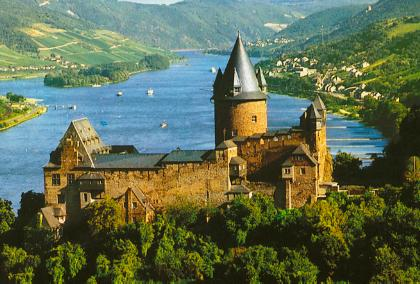

|


Information on BonnLocated in the beautiful Rhine Valley between the Siebengebirge hills and the Eifel countryside, Bonn enjoys a rich heritage from its 2,000-year history, including roman traces in the north of the city or a variety of castles, palaces and other historic buildings. In the past half-century, Bonn has gone through dramatic changes. In 1949, the quiet university town was turned into the western capital of the divided Germany, mainly because Konrad Adenauer, the first chancellor (head of the government), lived here. Even after the reunification of Germany in 1990, Bonn remained the seat of government of the Federal Republic of Germany until 1999, when the most important ministries moved to Berlin again. Even today Bonn retains some governmental functions as a "Bundesstadt" (Federal city). Besides, due to the international spirit, several UN facilities have come to Bonn. The city is also a center for modern technology, accomodating the headquarters of Deutsche Post World Net, an international logistics company, and Deutsche Telekom, the leading German phone and internet company. The following pages contain more detailed information about Bonn and the AOSD conference venue:
If you have any questions, feel free to ask the Local Organizing Committee: aosd06oc Interested in the Rhine Valley as a UNESCO World Heritage Site? Edited by the AOSD Conference Committee. Send comments to: webmaster  aosd.net aosd.net |